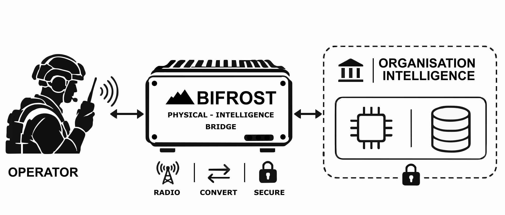

Secure access
to critical information.
Vandskar develops communications infrastructure that connects people directly to their organisation's data, analytical systems and expert knowledge. Our flagship product, Bifrost, is designed to make critical decision support available wherever people work, through controlled voice or digital communication.
Explore BifrostYour intelligence. Your infrastructure.

Bifrost is being developed to work with the systems an organisation already trusts, including privately hosted AI models, internal databases, specialist analytical tools and approved commercial AI providers. Organisations can determine which resources are available, where information is processed and how responses are delivered.
Where additional scrutiny is required, human specialists can remain part of the process. Review, approval and escalation procedures can be integrated into the response workflow, preserving established responsibilities and professional judgement.
Critical information where decisions are made.
A military team may need guidance based on current operational doctrine without carrying sensitive information into the field. An emergency physician may need access to hospital-approved clinical knowledge. An airline pilot or industrial operator may require specialist technical information while remaining focused on an immediate task.
In each environment, Bifrost is intended to make the organisation's most capable analytical resources accessible through a familiar, controlled communications interface. People retain responsibility for decisions, supported by relevant information when and where it is needed.
Put your organisation's expertise within reach.
Vandskar Bifrost is being developed as a communications bridge between people and the information, models and specialists supporting their decisions. The approach is designed to accommodate different interfaces, deployment environments and organisational requirements.
Explore BifrostBifrost is designed for high-stakes environments where secure access to extensive, mission-critical knowledge is essential. Applications span military operations, healthcare and industry, connecting decision-makers to their organisation's intelligence when it matters most.